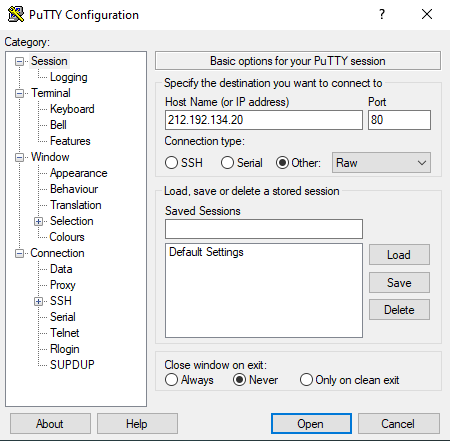
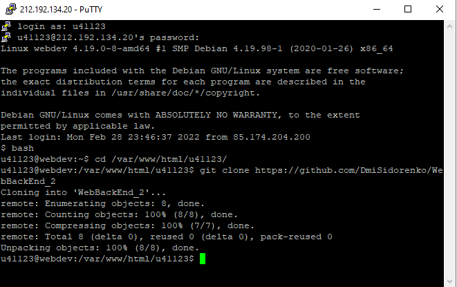
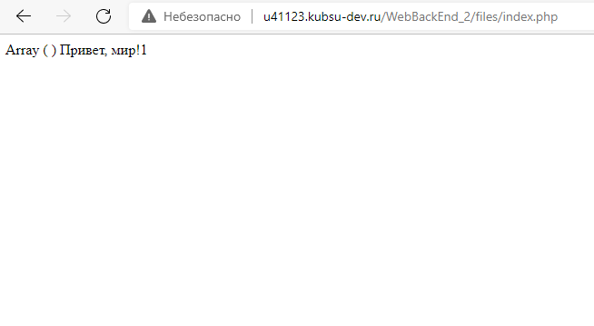
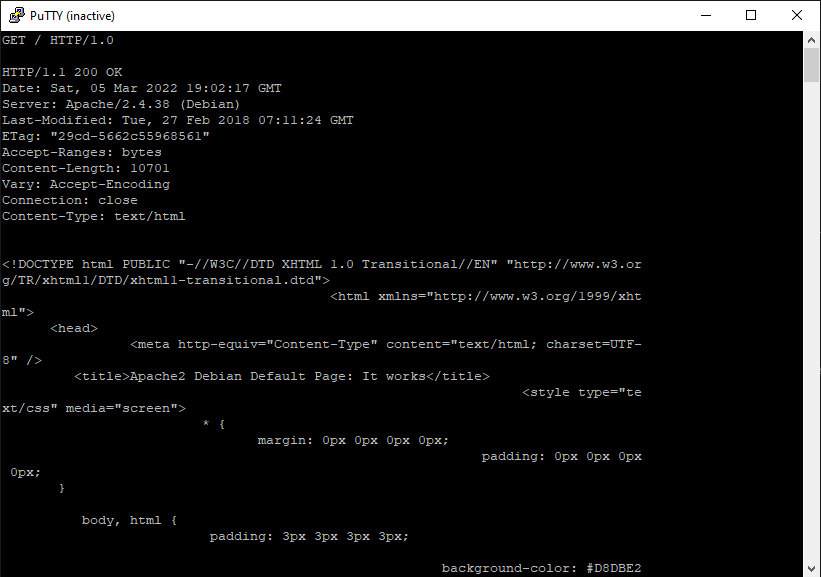
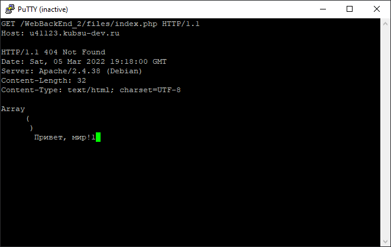
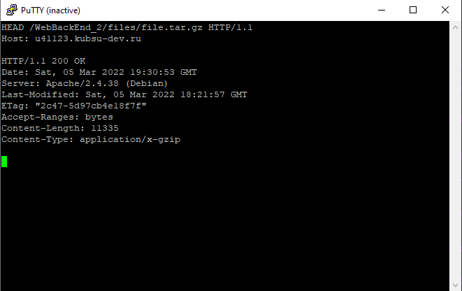
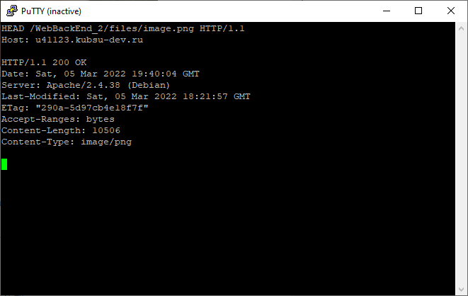
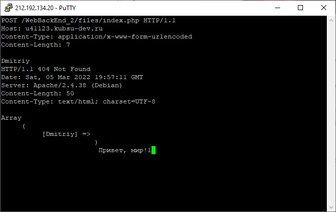
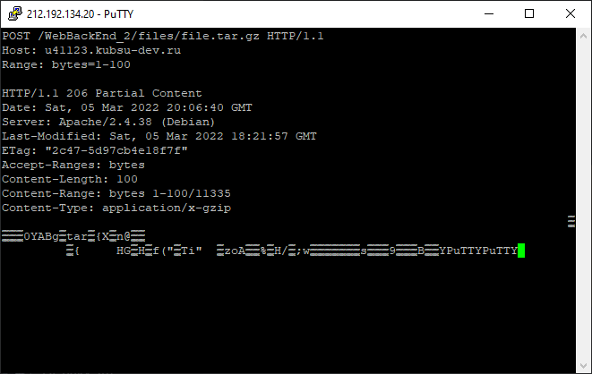

1.подключение через PuTTY по порту 80
2. Отправка файлов на сервер
3. Проверка работоспособности index.php
4. Получение главной страницы сайта kubsu-dev.ru методом GET по протоколу HTTP 1.0. По умолчанию сервер отвечает по протоколу HTTP 1.1
5. Получение внутренней страницы сайта u47531.kubsu-dev.ru методом GET по протоколу HTTP 1.1
6. Получение информации о файле file.tar.gz.
7. Определение медиатипа ресурса image.png расположенного на удаленном сервере.
8. Отправка комментария на удаленный сервер по адрессу u41123.kubsu-dev.ru/index.php. Для отправки комментария был использован POST запрос в теле которого был указан сам комментарий. В ответе от сервера был получен отправленный комментарий, а также строка с текстом "Привет, мир"
8. Получение первых 100 байт из файла file.tar.gz. Для их получения был использован GET запрос с заголовком Range. В заголовке Range указоно что нужно получить именно первые 100 байт из файла
8. Определение кодировки файла index.php.